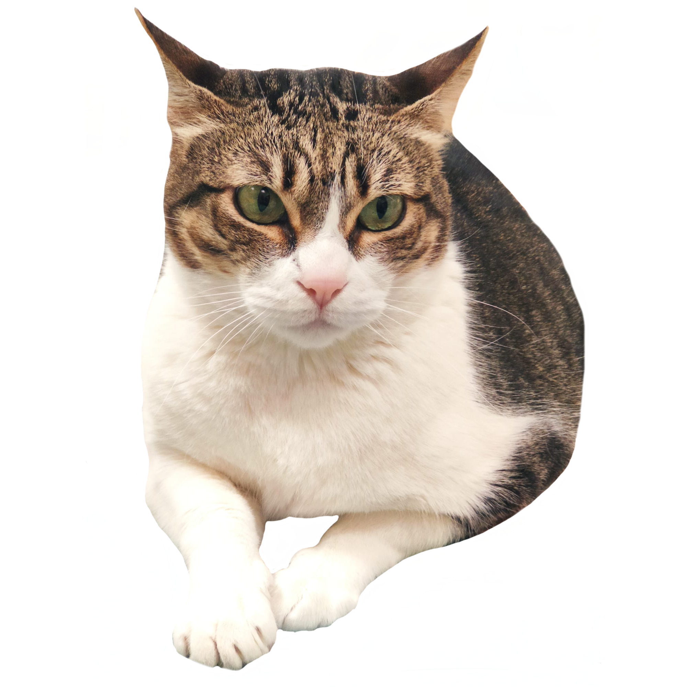

¡Ayudanos a ayudar!
¡Bienvenido/a a Progat Cornellà!
Somos una asociación formada por voluntarios, y trabajamos para mejorar la vida de los felinos de la ciudad de Cornellà de Llobregat, en Barcelona. Y lo más importante...¡Nunca nos rendimos!
Entendemos que si has llegado hasta aquí, es porque nos buscabas por una de estas tres razones: adoptar a uno de nuestros adorables gatos, porque tienes intención de ser voluntario o porque quieres realizar una donación a nuestra asociación. Sea como fuere, esperamos que encuentres lo que buscas y, sobretodo, te agradecemos tu interés en cualquiera de los casos.
Si no encuentras lo que buscas, puedes contactarnos por teléfono, enviarnos un correo electrónico o escribirnos a través de cualquiera de nuestras redes sociales. Te responderemos tan rápido como podamos.
¿Cómo puedes ayudar?
HAZTE SOCIO

Los socios ayudan a que nuestra asociación siga en marcha y, por lo tanto, podamos seguir con nuestras labores con los felinos.
TEAMER
Teaming es una iniciativa solidaria en la que puedes ayudar aportando 1€ al mes que se destinan a diversas causas.
DONACIÓN
Agradecemos cualquier muestra de apoyo a nuestra labor. Si quieres, puedes traernos latas, sacos de pienso o mantas.
Adopta un gato
Cuando adoptas, amplías la familia, te haces un regalo de lleno al corazón y das la oportunidad a que nos podamos ocupar de más gatos. Los gatos que damos en adopción, están desparasitados. Si tienen edad para estar esterilizados los damos esterilizados, sino con el compromiso de que más adelante se realice dicha intervención.